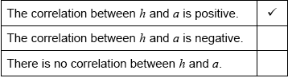

* This question is from an exam for a previous syllabus, and may contain minor differences in marking or structure.
(M1)
Note: Award (M1) for correct substitution of 50 into equation of the regression line.
(A1) (C2)
OR
(M1)
Note: Award (M1) for correctly summing the values of the points, and dividing by 25.
(A1) (C2)
[2 marks]
line through and (A1)(ft)(A1) (C2)
Note: Award (A1)(ft) for a straight line through (50, their ), and (A1) for the line intercepting the -axis at ; this may need to be extrapolated. Follow through from part (a). Award at most (A0)(A1) if the line is not drawn with a ruler.
[2 marks]
 (A1) (C1)
Note: Award (A0) if more than one tick (✔) is seen.
[1 mark]
18 is less than the lowest age in the survey OR extrapolation. (A1) (C1)
Note: Accept equivalent statements.
[1 mark]